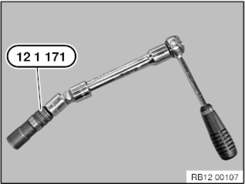
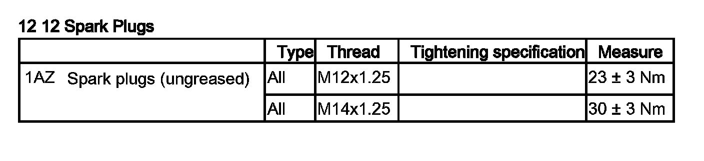
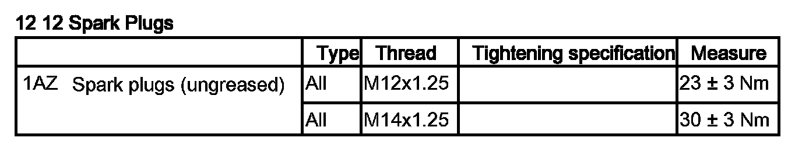
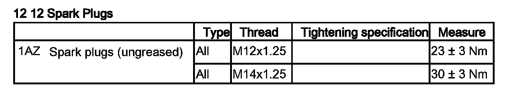
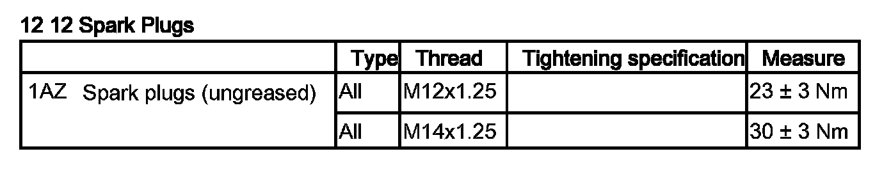
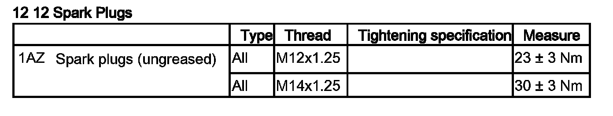
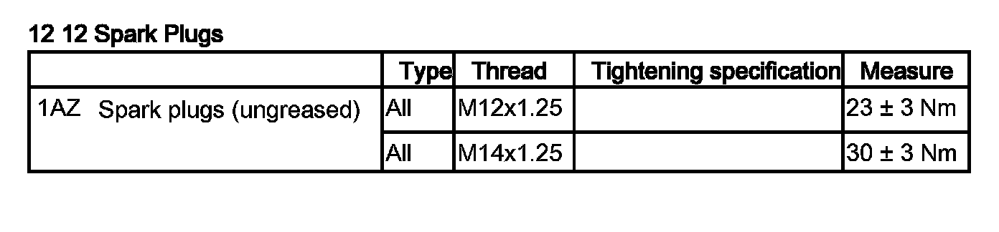

Spark Plug: Service and Repair
12 12 011 Replace all spark plugs (N40, N42, N45, N45T, N46, N46T, N51, N52, N52K)
Special tools required:

Necessary preliminary tasks:
- Switch off ignition.
- Remove ignition coils.

IMPORTANT:
Wear safety goggles.
Oil and dirt particles may get into your eyes.
Clean spark plug slot with compressed air.

Unscrew the spark plugs with special tool 12 1 171 and an extension with joint.
Installation note:
First, screw the spark plugs into the engine hand-tight with special tool 12 1 171 and an extension with joint.
Next, tighten the spark plugs with a torque wrench, special tool 12 1 171 and an extension with joint.
Observe tightening torque.
Tightening torque 12 12 1AZ.





